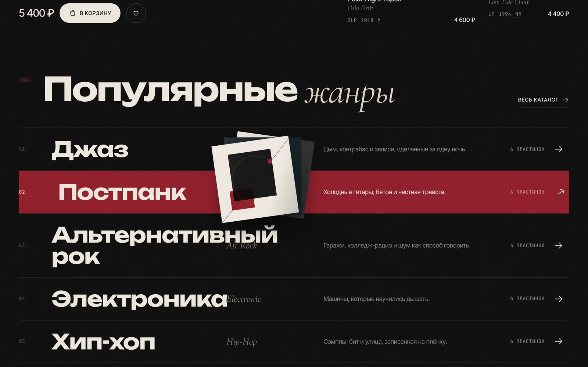

← Bütün işlərSaytlar
NOCTURNE
Keys: müstəqil musiqi jurnalı kimi oxunan və tam funksional mağaza kimi işləyən vinil val onlayn mağazası.

Tapşırıq
NOCTURNE vinili kolleksiyaçılara və musiqini fon yox, mədəniyyət sayan insanlara satır. Tapşırıqda adətən bir-birinə zidd olan iki tələb var idi: müstəqil jurnal atmosferi və real mağazanın rahatlığı.
Tanınan obraz
Eyni kartlar və standart bloklar olmadan — müştəri şablon mağazaları əvvəlcədən rədd etmişdi.
Rahat kataloq
Filtrlər, sıralama, axtarış və iki baxış rejimi.
Tam alış yolu
Səbət, seçilmişlər, sifariş. Backend yox idi, hər şey lokal məlumatlarla işləyir.
- 11
- ekran: ana səhifədən sifariş nömrəsinə qədər
- 36
- demo kataloqda reliz
- ≈70 KB
- bütün sayt, sıxılmış halda
- 0
- xarici kitabxana
Auditoriya
| Kim | Nə axtarır | İnterfeysin cavabı |
|---|---|---|
| Kolleksiyaçı | Konkret pres, disk və üzlüyün vəziyyəti, il | Şkala ilə iki Goldmine qiyməti, nəşr və kataloq nömrəsi, vəziyyətə görə filtr |
| Musiqisevər, 18–40 | Yeni bir şey kəşf etmək, valın niyə vacib olduğunu anlamaq | Kurator kolleksiyaları, redaksiya seçimləri, “oxşar albomlar” |
| Telefondan alıcı | Tez tapmaq və almaq | Aşağı panel, açılan paneldə filtrlər, sabit alış düyməsi |
İdeya
Jurnal × mağaza
Sayt jurnal nömrəsi kimi tərtib olunub: ana səhifənin nömrəsi və tarixi var, bölmələr nömrələnib, mətnlərdə böyük baş hərflər və sitatlar var. Bu qatın altında ciddi mağaza mexanikası var: qiymət, stok və alış düyməsi həmişə eyni yerdədir.
Redaksiya
Böyük qrotesk və kursiv serif, asimmetrik torlar, təsvir üzərində mətn.
Analoq
Val keçid elementidir: üzlükdən çıxır, fırlanır, səhifə pərdəsinə çevrilir.
Funksiya
Filtrlər linkdə saxlanılır; hər vəziyyətin — boş, “satılıb”, xəta — öz dizaynı var.
Vizual sistem

Kodla çəkilmiş 36 üz qabığı
Foto yox idi, stok şəkillər isə layihəni şablona çevirərdi. Hər üz qabığı relizin identifikatorundan qurulur: 13 üslub, 12 palitra. İşlənmiş üzlüklərdə valın izi görünür — qiymət nə qədər aşağıdırsa, bir o qədər nəzərə çarpır.
Ekranlar




Mobil versiya


Hərəkət
| An | Müddət | Nə baş verir |
|---|---|---|
| Giriş | 1.3 s | 000→100 sayğac, hərflər bir-bir qalxır |
| Keçid | 0.4 + 0.6 s | Bölmə adı olan bordo pərdə |
| Kart | 0.8 s | Üzlük sürüşür, val çıxır və fırlanır |
| Səbətə | 0.7 s | Val qövs üzrə səbət ikonuna uçur |
Nəticə
Backend-ə hazır
Tam alış yolu işləyir: filtrlər, qalığı nəzərə alan səbət, seçilmişlər, axtarış, sifariş. Hər şey kitabxanasız təmiz HTML, CSS və JavaScript ilə qurulub; məlumat, vəziyyət və interfeys ayrılıb, ona görə API qoşmaq yalnız bir qata toxunur.
Qalmaq istədiyiniz mağaza.
Yeni layihələr üçün açığam
Gəlin birlikdə
diqqətçəkən bir şey edək
Tapşırığı bir-iki cümlə ilə təsvir edin. İş günü ərzində cavab verirəm.